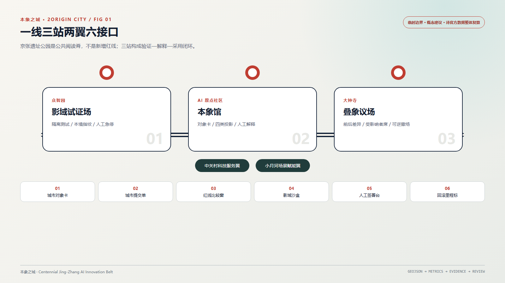
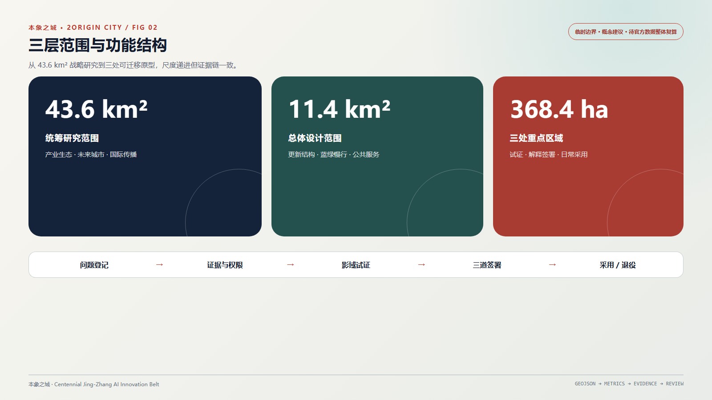
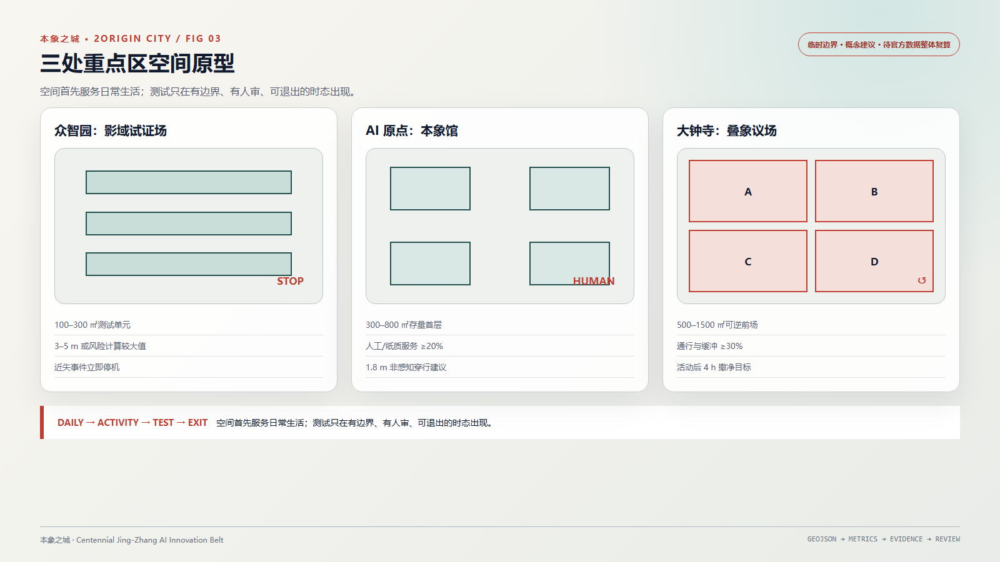
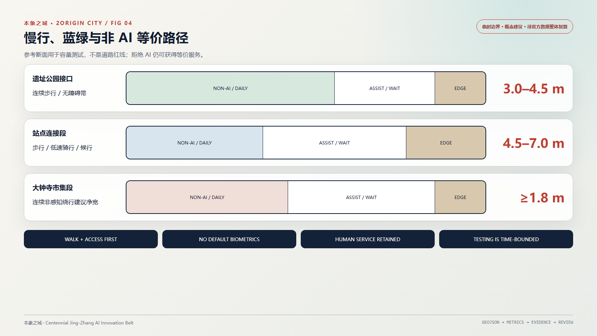
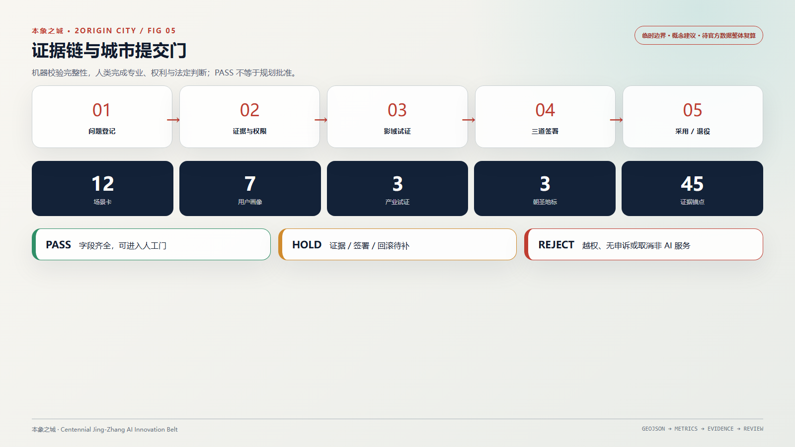

FIG 01
一线三站两翼六接口
京张遗址公园作为公共阅读脊；三站形成验证—解释—采用闭环。
不是另一个城市大脑，而是一套公开、可核对、可签署、可纠错的城市变更规则。
三层范围连接三处重点区域；用地分区、交通慢行、蓝绿公共空间、建筑与更新项目共享同一证据链。

京张遗址公园作为公共阅读脊；三站形成验证—解释—采用闭环。

从 43.6 km² 统筹研究到 11.4 km² 总体设计和三处可迁移原型。

众智园影域试证场、AI 原点社区本象馆、大钟寺叠象议场。

参考断面用于容量测试，不是道路红线；拒绝 AI 仍可获得等价服务。

机器检查完整性，人类完成专业、权利与法定判断；PASS 不等于规划批准。
数值来自提交包概念图层，只用于一致性校验；边界假设未解决前不构成正式规划指标。
agent.1—agent.6、12 张场景卡、7 类人物、3 类产业试证和三处重点区原型均已映射。
确定性、空间、视觉与专业检查必须同时通过；边界 provisional 警告保留。
来源见 sources.json；官方 polygon 到位后，GeoJSON、指标、图纸与网页必须全包复算。
12 cards · 7 personas · 3 industry tests；每个场景都有人工入口与非 AI 等价路径。
不采连续轨迹；电话和纸质入口。
去标识统计；现场人工观察。
封闭测试；近失即停机。
不作诊断；保留人工窗口。
不做能力排名；来源过期挂起。
非法律意见；规则不符即停。
不抓顾客画像；自有数据可删除。
受影响者签署；可恢复原排期。
不拍人脸；误报超阈值退回。
离线内容；争议史实并列。
只引权威源；冲突时不发布。
高影响不得自动终局。
本地运行确定性规则，只检查门禁，不替代法定决定。
选择一个样例 / Select a sample
GeoJSON → metrics → matrices → compiler → professional and public review.
唯一规范记录同时保存来源、置信度、异议和当前裁定。
依法有权主体、专业责任人、受影响群体程序代表三道证据。
非 AI 等价服务、申诉、人工接管、回滚或不可逆加严门槛。